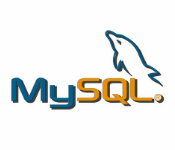

THE INTERFACE TO THE MYSQL,PL/SQL BEGINS

MY SQL
MySQL is a very popular open-source relational database management system (RDBMS).
MySQL is a relational database management system
MySQL is open-source
WHO USES MY SQL
Huge websites like Facebook, Twitter, Airbnb, Booking.com, Uber, GitHub, YouTube, etc.
Content Management Systems like WordPress, Drupal, Joomla!, Contao, etc.
A very large number of web developers around the world
PL/SQL
-->>PL/SQL is a procedural extension of SQL, making it extremely simple to write procedural code that includes SQL as if it were a single language.
-->>In comparison, most other programming languages require mapping data types, preparing statements and processing result sets, all of which require knowledge of specific APIs.
-->>The data types in PL/SQL are a super-set of those in the database, so you rarely need to perform data type conversions when using PL/SQL.
Ask your average Java or .NET programmer how they find handling date values coming from a database. They can only wish for the simplicity of PL/SQL.


.png)